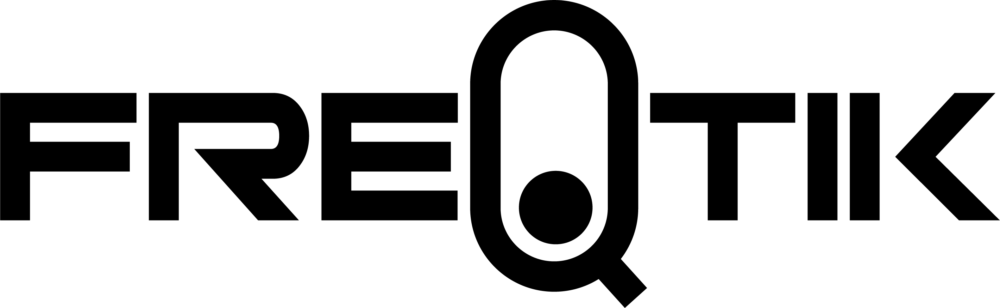

☰

create experiences & find solutions.
Audio Tools · Impulse Anvil
Downloads
Docs & FAQ
Connect
About & Projects
About FreQtik
Games · Learning to Bear
Games · Aim Trainer Bee Pro
Games · Micro Mouse Trainer
Games · Boon TD Online
Music · YouTube
Music · Spotify